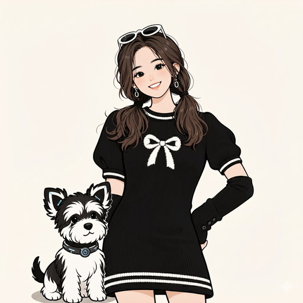

AI 产品与 智能体产品化
关注智能体如何从能力集合，变成可理解、可管理、可发布、可运营的产品体系。
我曾参与低空经济、AI 产品体系规划和电信行业情报体系搭建，擅长把复杂行业信息整理成可判断、可传播、可落地的分析框架。
贴 JD 或选下方示例，30 秒内告诉你。
关注智能体如何从能力集合，变成可理解、可管理、可发布、可运营的产品体系。
关注大模型商业化、Agent 产品化、AI 应用落地和企业付费意愿等议题，并通过公开文章持续补齐 AI 行业判断。
关注如何把电信行业情报体系搭建经验迁移到 AI 行业，用 AI 工具提升信息采集、资料整理、分析写作和内部分享效率。
从 0 到 1 搭建情报机制 · 推动公司第一部白皮书 · 把 170+ 智能体翻译成产品。

从 0 到 1 搭建公司电信行业情报体系，覆盖宏观政策、标准组织、四大运营商客户和竞争对手四类维度，并形成每周行业信息采集、整理和内部分享机制。
查看详情 →参与低空经济项目从 0 到 1 立项推动，完成前期行业研究、业务研究、系统架构相关内容参与、白皮书撰写，并在展会上进行产品演讲推广。
查看详情 →

基于公司已有 170+ 智能体，参与智能体产品体系分类、门户规划设计、产品发布直播策划与脚本策划，并承担 AI 产品白皮书框架搭建、第二章节撰写与全文整合工作。
查看详情 →用 AI 重构从信息输入、逻辑推演到前端落地的全链路工作流。
内容 + 架构
风格规范
PRD 文档
上线网站
原始信息
结构化笔记
长文初稿 v0.5
已发布长文
把研究里反复出现的判断，整理成可阅读、可引用的长文与笔记；覆盖 AI 商业化、Coding Agent、产品化路径等主题。外链与日期会随发布持续更新。
技术层 + 商业基础设施层 + 产品工程层三层叠加的解读：含 5 维度商业化框架、5 场景对比矩阵，以及反面约束与行业判断。
每个场景一次实测 + 复盘：把模型能力翻译成「普通人能不能用、值不值得用」的判断框架。
公众号长文外链上架后，将在此条补齐标题、摘要与链接；当前占位便于你先确认版式与信息层级。
更多短内容入口见页面底部 Contact。
从研究、产品、白皮书到商业化支持，是我的工作轨迹；从阅读、运动到随手记录，是我的生活切面。
负责低空经济、AI 智能体产品、Web3+Telco 等前沿领域的战略规划、市场洞察及商业化落地支持，实现从研究分析到产品宣发与市场商机孵化的全链路闭环。
深度参与京东零售战略咨询项目，通过高管访谈梳理业务逻辑，构建商业模式沙盘；主笔美团、小米造车等 10 余个标杆案例的商业模式拆解分析。
负责 NIO Phone 及智能硬件周边市场可行性分析与用户洞察；独立完成蓝牙耳机从 0 到 1 全项战略汇报，助力新产品线成功立项。
GPA: 3.84 / 4.00。相关课程：产品设计、创新体系、区块链金融等。
GPA: 3.88，专业排名第一（1/25）。相关课程：计量经济学、金融学、传播学等。
小说让我看见人性的褶皱，社会哲学让我搞清楚自己为什么这样想，行业书提醒我研究方法还可以再迭代。
跳舞、普拉提、徒步、旅行、摄影——五件让我从工作里走出来、重新感觉到身体和世界的事。
商业、女性主义、哲学、运动——同时订阅 20+ 档，挑了 6 档最常打开的，按内容密度排。
三件最底层的原则——支撑我在不确定里做选择，也支撑我和过去的自己和解。
身体、语言、专业、爱好——五条平行学习线，组合起来才是一个完整的"在成长"的人。
小说类：金爱烂《滔滔生活》《外面是夏天》——她总能用极细的笔触描写人性在每一个幽微时刻的真实样子。《滔滔生活》和《口水连连》两篇感受最深。
社会哲学：在看迈克尔·桑德尔《精英的傲慢》——想搞清楚优绩主义为什么这么深刻地影响了我。刚读完赫尔曼·黑塞《荒原狼》，主人公在市民阶级和哲学家两种身份之间切换、撕裂的感受我时常也会有；在啃贝克尔《死亡否认》。
行业 & 人物：《如何快速了解一个行业》——想看看自己的研究方法论还有没有可以改进的地方；《黄仁勋：英伟达之芯片》看了一小半。
跳舞：爵士、韩舞、中国舞都跳。音乐响起，我能很快进入心流——就算动作不完美，扭起来就快乐。
普拉提：大学练过 1.5 年垫上普拉提，现在系统学器械。让我对呼吸模式和腰部柔软度有了完全不同的认知。
徒步：西湖龙路线 26km、北京野长城、香山、香港麦理浩径一段。一边亲近自然，一边和自己对话。
旅行：去过 8 个国家。最在意的不是景点，是当地人怎么说话、吃饭、坐地铁。
摄影：喜欢拍真实的人文，不爱摆拍。相机、Pocket 3、胶片机、拍立得都有，但用得最多的还是手机。
不同的年龄、不同的状态下，想法一定会变。我不会因为过去那样想、现在不这么想了，就责怪自己——只要不停学习、不停输入，我会和自己达成最圆满的和解。
Karma 是真的。我没有宗教信仰，但始终相信因果。这是我做选择最底层的原则。
为每一个进步欢呼雀跃。工作上的、关系上的、生活上的——很小的进步也值得自己跟自己鼓掌。

"你来了，很高兴认识你。
听完我的故事，我也想听听你的。"
如果你正在寻找 AI 产品、行业研究或产品策略 方向的人选，欢迎联系我。期待和你聊聊行业判断、产品落地，或我搭建的自动化 Agent。